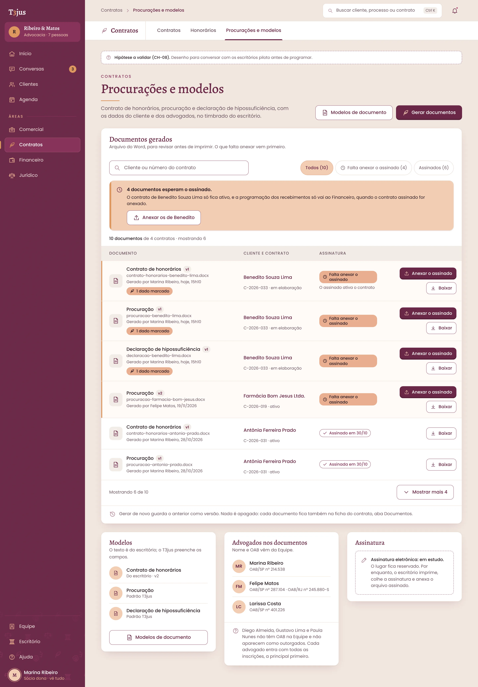
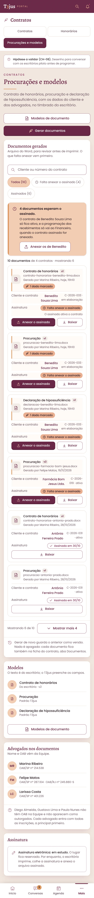

Documentos gerados
Busca e filtro pela situação da assinatura: Todos, Falta anexar o assinado e Assinados. O que falta anexar vem primeiro, com filete âmbar, e o aviso no alto lembra que o contrato de Benedito só fica ativo com o assinado. Cada linha: documento e versão, dado marcado, cliente e contrato, quem gerou, assinatura, Anexar o assinado e Baixar. Ao lado, os modelos, os advogados com todas as inscrições e o lugar reservado da assinatura eletrônica.
Abrir: procuracoes.html?estado=procuracoes (estreite a janela para ver o celular)